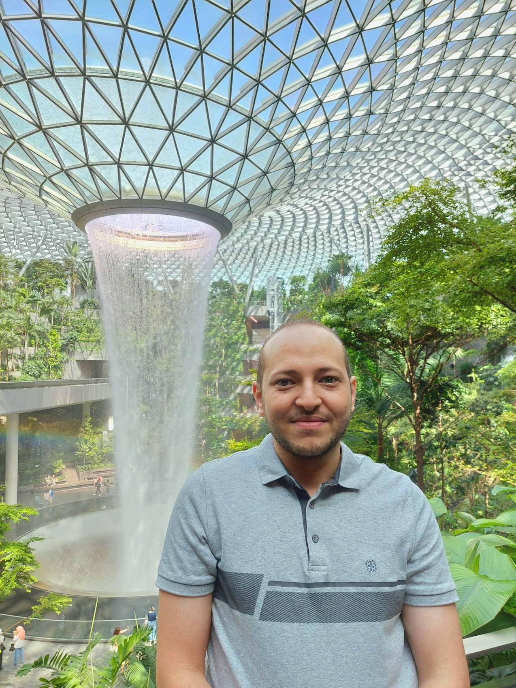

Emadeldeen Eldele
A*STAR, Singapore.
About Me
I've been doing my PhD studies in the school of Computer Science and Engineering, at Nanyang Technological University (NTU), Singapore. I was honoured to work under the supervison of Prof. Kwoh Chee Keong and Dr. Wu Min. Previously, I received my B.Sc and M.Sc degrees in Computer Engineering from Tanta University, Egypt.
My research revolves around improving the robustness of deep learning models for time series data against challenges, e.g., domain shift [TAI'23, KDD'23], labels scarcity [IJCAI'21], and adversarial attacks. This allows a more applicable implementation of deep learning in real world.
I'm also interested in studying time series-related applications, e.g., sleep stage classification [TNSRE'21, TETCI'22, TNSRE'23] and fault diagnosis [TIM'22].
I'm open to any related collaboration, so feel free to contact me.
My research revolves around improving the robustness of deep learning models for time series data against challenges, e.g., domain shift [TAI'23, KDD'23], labels scarcity [IJCAI'21], and adversarial attacks. This allows a more applicable implementation of deep learning in real world.
I'm also interested in studying time series-related applications, e.g., sleep stage classification [TNSRE'21, TETCI'22, TNSRE'23] and fault diagnosis [TIM'22].
I'm open to any related collaboration, so feel free to contact me.
Research Interests
- Deep learning
- Self-Supervised learning
- Contrastive learning
- Transfer learning
- Domain adaptation
- Domain generalization
- Time-Series data
- Biomedical Sensory data
- Manufacturing data
2023
ACM Conference On Knowledge Discovery and Data Mining (SIGKDD) [Acceptance rate: 22.1%]
Mohamed Ragab; Emadeldeen Eldele; Min Wu; Chuan-Sheng Foo; Xiaoli Li; and Zhenghua Chen
The paper introduces a novel source-free domain adaptation method called MAsk and imPUte (MAPU) for time series data. MAPU can effectively capture the temporal dynamics present in time series data without requiring access to the source data during adaptation. The method involves temporal masking and a temporal imputation network to ensure sequence consistency between the source and target domains. By incorporating temporal adaptation capability into existing source-free methods, MAPU achieves significant performance improvements in real-world time series adaptation tasks.
Code
@inproceedings{MAPU,
author = {Ragab, Mohamed and Eldele, Emadeldeen and Wu, Min and Foo, Chuan-Sheng and Li, Xiaoli and Chen, Zhenghua},
title = {Source-Free Domain Adaptation with Temporal Imputation for Time Series Data},
year = {2023},
isbn = {9798400701030},
publisher = {Association for Computing Machinery},
address = {New York, NY, USA},
url = {https://doi.org/10.1145/3580305.3599507},
doi = {10.1145/3580305.3599507},
booktitle = {Proceedings of the 29th ACM SIGKDD Conference on Knowledge Discovery and Data Mining},
pages = {1989–1998},
numpages = {10},
keywords = {time series data, temporal imputation, source-free domain adaptation, privacy preserving},
location = {Long Beach, CA, USA},
series = {KDD '23}
}
2023
IEEE Transactions on Artificial Intelligence (TAI)
Emadeldeen Eldele; Mohamed Ragab; Zhenghua Chen; Min Wu; Chee-Keong Kwoh; and Xiaoli Li
This work proposes a novel lightweight contrastive domain adaptation framework called CoTMix for time-series data, which uses contrastive learning solely to mitigate the distribution shift across different domains. We propose a novel temporal mixup strategy to generate intermediate augmented views for source and target domains, which are then leveraged for contrastive learning, which gradually pushes both domains towards a common intermediate space, while learning about their temporal relations.
Code
@ARTICLE{cotmix,
author={Eldele, Emadeldeen and Ragab, Mohamed and Chen, Zhenghua and Wu, Min and Kwoh, Chee-Keong and Li, Xiaoli},
journal={IEEE Transactions on Artificial Intelligence},
title={Contrastive Domain Adaptation for Time-Series Via Temporal Mixup},
year={2023},
volume={},
number={},
pages={1-10},
doi={10.1109/TAI.2023.3293473}
}
2023
ACM Transactions on Knowledge Discovery from Data [IF: 2.713]
Mohamed Ragab*; Emadeldeen Eldele*; Wee Ling Tan; Chuan-Sheng Foo; Zhenghua Chen; Min Wu; Chee-Keong Kwoh; Xiaoli Li
(* Equal Contribution)
(* Equal Contribution)
The paper introduces ADATIME, a benchmarking evaluation suite that systematically evaluates different domain adaptation methods on time series data, standardizing the backbone network architectures, evaluation schemes, and benchmarking datasets. The results suggest that visual domain adaptation methods are competitive with methods specifically developed for time series data, and realistic model selection approaches can be used for hyper-parameter selection.
Code
@article{adatime,
author = {Ragab, Mohamed and Eldele, Emadeldeen and Tan, Wee Ling and Foo, Chuan-Sheng and Chen, Zhenghua and Wu, Min and Kwoh, Chee-Keong and Li, Xiaoli},
title = {ADATIME: A Benchmarking Suite for Domain Adaptation on Time Series Data},
year = {2023},
issue_date = {September 2023},
publisher = {Association for Computing Machinery},
address = {New York, NY, USA},
volume = {17},
number = {8},
issn = {1556-4681},
url = {https://doi.org/10.1145/3587937},
doi = {10.1145/3587937},
journal = {ACM Trans. Knowl. Discov. Data},
month = {may},
articleno = {106},
numpages = {18}
}
2023
Preprint
Emadeldeen Eldele; Mohamed Ragab; Zhenghua Chen; Min Wu; Chee-Keong Kwoh; and Xiaoli Li
This survey paper presents a new taxonomy to categorize existing approaches that deal with the scarcity of labeled data in time series data such as transfer learning, self-supervised learning, and semi-supervised learning. The paper also reviews recent advances in each approach, discusses their limitations, and suggests future directions for further progress in the field.
@article{emadeldeen2023labelefficient,
title = {Label-efficient Time Series Representation Learning: A Review},
author = {Eldele, Emadeldeen and Ragab, Mohamed and Chen, Zhenghua and Wu, Min and Kwoh, Chee Keong and Li, Xiaoli},
journal = {arXiv preprint arXiv:2302.06433},
year = {2023}
}
2023
IEEE Transactions on Neural Systems and Rehabilitation Engineering (TNSRE) [IF: 4.528]
Emadeldeen Eldele; Mohamed Ragab; Zhenghua Chen; Min Wu; Chee-Keong Kwoh; and Xiaoli Li
This paper discusses the challenge of limited labeled data for deep learning models used in EEG-based sleep stage classification (SSC) and explores the effectiveness of self-supervised learning (SSL) to improve the performance of SSC models in scenarios with few labeled data. We conduct a study on three SSC datasets and find that fine-tuning pretrained models with only 5% labeled data can achieve competitive performance and that SSL pretraining can improve the models' robustness to data imbalance and domain shift issues.
Code
@article{emadeldeen2023eval,
title = {Self-supervised Learning for Label-Efficient Sleep Stage Classification: A Comprehensive Evaluation},
author = {Eldele, Emadeldeen and Ragab, Mohamed and Chen, Zhenghua and Wu, Min and Kwoh, Chee Keong and Li, Xiaoli},
journal = {IEEE Transactions on Neural Systems and Rehabilitation Engineering},
year = {2023},
volume = {31},
pages = {1333-1342},
doi = {10.1109/TNSRE.2023.3245285}
}
2022
Preprint
Emadeldeen Eldele; Mohamed Ragab; Zhenghua Chen; Min Wu; Chee-Keong Kwoh; Xiaoli Li; Cuntai Guan
This work proposes a novel Time-Series semi-supervised representation learning framework, CA-TCC, that learns representations given few labeled data using contrastive learning. CA-TCC builds on top of our TS-TCC work by leveraging the robust pseudo labels from the fine-tuned TS-TCC model in a supervised contrastive loss.
Code
@article{emadeldeen2022catcc,
title = {Self-supervised Contrastive Representation Learning for Semi-supervised Time-Series Classification},
author = {Eldele, Emadeldeen and Ragab, Mohamed and Chen, Zhenghua and Wu, Min and Kwoh, Chee Keong and Li, Xiaoli and Guan, Cuntai},
journal = {arXiv preprint arXiv:2208.06616},
year = {2022}
}
2022
IEEE Transactions on Emerging Topics in Computational Intelligence (TETCI) [IF:4.851]
Emadeldeen Eldele; Mohamed Ragab; Zhenghua Chen; Min Wu; Chee-Keong Kwoh; Xiaoli Li; Cuntai Guan
This paper proposes a new adversarial learning framework called ADAST to address the cross-domain shift problem in automatic sleep staging. ADAST preserves domain-specific features via unshared attention model, and incorporates an iterative self-training strategy to improve the target domain class alignment.
Code
@ARTICLE{eldele2022adast,
author = {Eldele, Emadeldeen and Ragab, Mohamed and Chen, Zhenghua and Wu, Min and Kwoh, Chee-Keong and Li, Xiaoli and Guan, Cuntai},
journal = {IEEE Transactions on Emerging Topics in Computational Intelligence},
title = {ADAST: Attentive Cross-Domain EEG-Based Sleep Staging Framework With Iterative Self-Training},
year = {2022},
pages = {1-12},
doi = {10.1109/TETCI.2022.3189695}
}
2022
IEEE Transactions on Neural Networks and Learning Systems (TNNLS) [IF:14.255]
Mohamed Ragab; Emadeldeen Eldele; Zhenghua Chen; Min Wu; Chee-Keong Kwoh; Xiaoli Li
This paper describes a new approach to address the domain shift problem in time series data using unsupervised domain adaptation called Self-supervised Autoregressive Domain Adaptation (SLARDA). In SLARDA, we propose a self-supervised learning module that improves the transferability of source features, in addition to a novel autoregressive domain adaptation technique to incorporate temporal dependency in adversarial training. Last, we incorporate an ensemble teacher model to align the class-wise distribution in the target domain using confident pseudo labels.
Code
@article{ragab2022selfsupervised,
author = {Ragab, Mohamed and Eldele, Emadeldeen and Chen, Zhenghua and Wu, Min and Kwoh, Chee-Keong and Li, Xiaoli},
journal = {IEEE Transactions on Neural Networks and Learning Systems},
title = {Self-supervised Autoregressive Domain Adaptation for Time Series Data},
year = {2022},
pages = {1-11},
doi = {10.1109/TNNLS.2022.3183252}
}
2022
IEEE Transactions on Instrumentation and Measurement (TIM) [IF: 5.332]
Mohamed Ragab; Zhenghua Chen; Wenyu Zhang; Emadeldeen Eldele; Min Wu; Chee-Keong Kwoh; Xiaoli Li
This paper proposes a new domain generalization approach called CCDG for fault diagnosis of rolling machinery that can learn environment-independent representation among data collected from different environments. This approach attempts to maximize the mutual information of similar classes across different source domains while minimizing mutual information among different classes to learn domain-independent class representation.
Code
@ARTICLE{Ragab_CCDG,
author = {Ragab, Mohamed and Chen, Zhenghua and Zhang, Wenyu and Eldele, Emadeldeen and Wu, Min and Kwoh, Chee-Keong and Li, Xiaoli},
journal = {IEEE Transactions on Instrumentation and Measurement},
title = {Conditional Contrastive Domain Generalization for Fault Diagnosis},
year = {2022},
volume = {71},
pages = {1-12},
doi = {10.1109/TIM.2022.3154000}
}
2021
International Joint Conferences on Artificial Intelligence (IJCAI-21) [Acceptance Rate: 13.9%]
Emadeldeen Eldele; Mohamed Ragab; Zhenghua Chen; Min Wu; Chee-Keong Kwoh; Xiaoli Li; Cuntai Guan
This paper proposes a self-supervised Time-Series representation learning framework via Temporal and Contextual Contrasting (TS-TCC), which learns representations from unlabeled data. First, we transform the raw data into two different yet correlated views using weak and strong augmentations. Next, a novel cross-view temporal contrasting module and a contextual contrasting module are proposed to learn robust temporal representations and further learn discriminative representations from the generated augmentated views.
Code
@inproceedings{emadeldeen_tstcc,
title = {Time-Series Representation Learning via Temporal and Contextual Contrasting},
author = {Eldele, Emadeldeen and Ragab, Mohamed and Chen, Zhenghua and Wu, Min and Kwoh, Chee Keong and Li, Xiaoli and Guan, Cuntai},
booktitle = {Proceedings of the Thirtieth International Joint Conference on Artificial Intelligence, {IJCAI-21}},
pages = {2352--2359},
year = {2021}
}
2021
IEEE Transactions on Neural Systems and Rehabilitation Engineering (TNSRE) [IF: 4.528]
Emadeldeen Eldele; Zhenghua Chen; Chengyu Liu; Min Wu; Chee-Keong Kwoh; Xiaoli Li; Cuntai Guan
This paper proposes AttnSleep; a deep learning architecture for automatic sleep stage classification using single channel EEG signals. AttnSleep consists of a feature extraction module based on a powerful feature extractor, followed by a temporal context encoder module that uses a multi-head attention mechanism to capture temporal dependencies among the features. It also addresses the class-imbalance problem via a class-aware loss.
Code
@article{eldele_attnSleep,
author = {Eldele, Emadeldeen and Chen, Zhenghua and Liu, Chengyu and Wu, Min and Kwoh, Chee-Keong and Li, Xiaoli and Guan, Cuntai},
journal = {IEEE Transactions on Neural Systems and Rehabilitation Engineering},
title = {An Attention-based Deep Learning Approach for Sleep Stage Classification with Single-Channel EEG},
year = {2021},
volume = {29},
pages = {809-818},
doi = {10.1109/TNSRE.2021.3076234}
}
2017
12th International Conference on Computer Engineering and Systems (ICCES)
Emadeldeen Eldele; Sherin M. El-Gokhy; Mohamed T. Faheem Saidahmed
This paper proposes an enhanced computational framework for predicting miRNA targets that uses structural, positional, and thermodynamic features extracted from miRNA-target alignment. The framework selects linearly separable features using eigenvalue analysis and applies them to a random forest classifier, achieving better results than existing tools.
@article{eldele_mirna,
author = {Eldele, Emadeldeen and El-Gokhy, Sherin M. and Saidahmed, Mohamed T. Faheem},
booktitle = {2017 12th International Conference on Computer Engineering and Systems (ICCES)},
title = {Enhanced framework for miRNA target prediction},
year = {2017},
pages = {544-549},
doi = {10.1109/ICCES.2017.8275367}}
}
Reviewer
2021 - Current
Served as a reviewer in the following journals:
- IEEE Transactions on Neural Networks and Learning Systems (TNNLS)
- IEEE Transactions on Cognitive and Developmental Systems (TCDS)
- IEEE Access
- Journal of Biomedical and Health Informatics (J-BHI)
- Neurocomputing
- Biomedical Engineering/Biomedizinische Technik
- Knowledge and Information Systems
- ICDM'22 (International Sustainable AI Workshop)
Teaching Assistant Nanayang Technological University (NTU), Singapore.
2020 - 2022
Guiding the undergraduates Lab sessions for different courses including:
- [CZ4032] Data Analytics and Mining
- [CE2002] Object-Oriented Design & Programming
- [SC1005] Digital Logic
Research Scholar Institute For Infocomm Research (I2R), A*STAR, Singapore.
2019 - 2023
Working on biomedical sensors data analysis. Gaining experience in time-series analysis using Deep learning techniques.
R&D Engineer INNOTECH Corp., Egypt.
2017
- Developed an algorithm for predicting epilepsy seizures in patients from scalp EEG signals.
- Worked with a team on extracting critical features from EEG signals.
- Based on the extracted features, we selected the most effective electrode to reduce the number of electrodes.
- Applied these features to a robust classifier that could predict the epilepsy and warn the patient one hour before its occurrence
- We successfully handled the model to the development team to implement it on the hardware.
Teaching Assistant Tanta University, Egypt.
2013 - 2019
- Assisted in teaching many courses, such as ANN, computer programming and computer networks.
- Participated in students’ awareness activities.
- Mentored students projects in "Made In University" (MIU) contest.
PhD in Computer Engineering from Nanayang Technological University (NTU), Singapore.
2019 - 2023
[CGPA: 4.33/5.0] Developing advanced deep learning algorithms to solve different problems including representation learning and few labels, that are related to biomedical sensory data.
I was awarded SINGA scholarship to do my PhD, which was funded by the Agency for Science, Technology and Research (A*STAR), Singapore.
Masters in Computer Engineering from Tanta University, Egypt.
2014 - 2018
[CGPA: 3.66/4.0] Developed a framework for predicting the targets of miRNAs in mRNAs using machine learning techniques.
Cloud Architecture Diploma from Information Technology Institute (iTi), Egypt.
2012 - 2013
Studied topics: virtualization, storage management, and cloud architecture, VMware (vSphere, vCloud director).
Bachelor of Computer Engineering from Tanta University, Egypt.
2007 - 2012
[CGPA: 87% with Excellent Honours] Relevant Course Work: Artificial Neural Networks, Object Oriented Programming, Data Structure and Algorithms, Computer Networks.